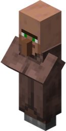
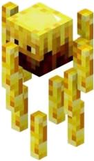
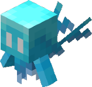
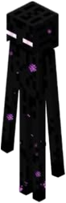
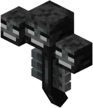

Fünf Stufen
Kronwerke öffnet in fünf Stufen. Jede hat ein Thema, ein Gemeinschaftsziel am Obelisken und ein eigenes Kapitel im Questbuch.
Die Regeln
- Eine Stufe öffnet für alle auf einmal. Niemand schaltet allein etwas frei.
- Jedes Ziel hat zwei Säulen, Technik und Magie, und beide müssen voll werden.
- Der letzte Schritt ist ein Event: Bei 98 Prozent nimmt der Obelisk nichts mehr an, dann gibt es einen Termin, alle Streamer sind live, und die letzten Items gehen gemeinsam rein.
- Jede Stufe kann ungefähr doppelt so viel wie die davor: Erz, Energie, Mana, Speicher, Fortbewegung.
- Nichts wird entfernt, nur später freigeschaltet. Bau- und Deko-Mods sind nie gesperrt.
- Wer später dazukommt, bekommt die Starterkits aller offenen Stufen und holt schnell auf.
- Vanilla ist frei, bis auf zwei Ausnahmen: den Nether (Stufe 2) und das End (Stufe 4). Beide öffnen mit einem Event.
Die Mengen gelten für 30 aktive Spieler und werden beim Öffnen einer Stufe an die echte Spielerzahl angepasst. In den ersten drei Stufen kommt je Säule ein Meilenstein dazu: ein gebautes Item aus dem Besten der Stufe, Technik und Magie zusammen. Meilensteine bleiben immer gleich viele und zählen viel auf dem Balken. Wie weit das aktuelle Ziel ist, steht live auf der Statusseite.
Steinwerk
ab Tag 1, geplant 5 Tage
Holz, Stein, Wasserräder, die ersten Zauber. Hier fangen alle am ersten Tag an.
Neu offen
- Die Oberwelt, ganz normal wie in Vanilla
- Create bis Andesit: Wasserrad, Mühlstein, Presse, Mixer ohne Lohenbrenner, Förderbänder, Lüfter, Andesit-Trichter und -Gehäuse, die Paket-Logistik
- Ars Nouveau: Novizen-Glyphen, Quellgefäße, Sourcelinks, die Imbuement Chamber, der Verzauberungsapparat, Starbuncles
- Botania bis zum Manapool und Manaverteiler, noch ohne Runenaltar
- Nature's Aura: der Naturaltar, Infused Iron, Goldblätter
- Mystical Agriculture Inferium, Iron Furnaces aus Kupfer und Eisen
- Farmer's Delight, Farming for Blockheads, Aquaculture
- Silent Gear bis Eisen, Kisten bis Eisen, Rucksäcke aus Leder, Holz-Schubladen
- Waystones, Neo Origins, Apotheosis-Affixe bis selten
- Die Mining Dimension (Portal aus Eisenblöcken, entzündet mit der Enchanted Pickaxe)
- Überwelt-Strukturen von Cataclysm und Born in Chaos
Noch gesperrt
- Der Nether
- Create-Messing, alle Create-Addons
- Mekanism, AE2, Refined Storage, Ender IO, Industrial Foregoing, Immersive Engineering, Powah, Oritech
- Pipez, Modular Routers, LaserIO, XNet, Integrated Dynamics, Productive Bees, Productive Metalworks
- Ars Nouveau ab Lehrling, Botania ab Runenaltar, Rituale von Occultism
- Theurgy, Hexerei, Eidolon, Malum, EvilCraft, Forbidden and Arcanus, Reliquary, Mahou Tsukai, Iron's Spells über gewöhnlich
- Undergarden, Eternal Starlight, Draconic Evolution, NuclearCraft
Ziel: Fundament des Kronwerks
| Säule | Item | Menge | Warum |
|---|---|---|---|
| Stein | Bruchstein (jeder) | 20 000 | Jeder kann ab der ersten Minute mithelfen. |
| Technik | Andesitlegierung | 1 500 | Der Mixer macht zwei pro Durchgang, die Werkbank eine. |
| Technik | Steinwerk-Getriebe | 12 fest | Meilenstein: Andesitgehäuse, Presse, Mühlstein, Wasserrad und Infused Iron. |
| Magie | Source Gem | 800 | Braucht Quellgefäße und die Imbuement Chamber. |
| Magie | Quellschlussstein | 12 fest | Meilenstein: Source-Gem-Blöcke, ein Quellgefäß, Manadiamanten, Goldblätter und Andesitlegierung. |
- Quests
- Start Here, Create, Ars Nouveau, Botania, Essen und Farmen, Speicher, Silent Gear, Erkunden.
- Starterkit
- Keins, das ist der Start.
Messingwerk
ab Tag 6, geplant 9 Tage
Messing, der Nether, Mana, die ersten Maschinen, die arbeiten, während du schläfst.
Das Netherportal am Spawn wird im Stream entzündet.
Neu offen
- Der Nether
- Create mit Messing: Lohenbrenner, Messing-Trichter und -Tunnel, mechanische Werkbänke, Deployer, Züge, Contraptions
- Create-Addons: Enchantment Industry, Connected, Steam 'n' Rails, Crafts & Additions, Power Grid, Diesel Generators, Mechanical Spawner
- Mekanism Basis: Metallurgic Infuser, Energized Smelter, Enrichment Chamber, Crusher, Heat Generator, Stahl
- Immersive Engineering bis Koksofen, Hochofen und Windmühle
- Pipez, Modular Routers, Productive Bees, Productive Metalworks
- Ars Nouveau Lehrling, Relais, das Ritualbecken, Ars Elemental
- Botania: Runenaltar und Terra-Platte
- Occultism: erste Rituale (Foliot, Djinni)
- Hexerei, EvilCraft, Forbidden and Arcanus, Reliquary
- Silent Gear Stahl, Goldkisten, Rucksäcke aus Eisen und Kupfer, Kompressions-Schubladen
- Iron's Spells ungewöhnlich und selten
Noch gesperrt
- Alfheim
- AE2, Ender IO, Industrial Foregoing, Powah, Oritech
- Mekanism ab fortgeschritten
- Theurgy, Eidolon, Malum, Mahou Tsukai
- Undergarden, Eternal Starlight, das End, Draconic Evolution, NuclearCraft
Ziel: Die Messingmaschine
| Säule | Item | Menge | Warum |
|---|---|---|---|
| Technik | Messingbarren | 2 000 | Heiß gemischt gibt es einen Barren pro Lohenstaub, überhitzt zwei. |
| Technik | Präzisionsmechanismus | 150 | Fünf Durchgänge auf einem Messingblech, nur 60 Prozent kommen heil heraus. |
| Technik | Messingherz | 8 fest | Meilenstein: Messinggehäuse, Präzisionsmechanismus, Elektronenröhren, Lohenbrenner und eine Feuerrune. |
| Magie | Mana Pearl | 600 | 6 000 Mana pro Perle, und nur mit einem Messinggehäuse unter dem Pool. |
| Magie | Terrastahlbarren | 50 | Braucht die Terra-Platte und je einen halben vollen Manapool. |
| Magie | Runenkern | 8 fest | Meilenstein: die vier Elementrunen, Mana Pearls, Messingbleche und Terrastahl. |
- Quests
- Der Nether, Create: Messing, Create: Züge, Mekanism, Immersive Engineering, Botania: Runen, Ars Nouveau: Magier, Occultism, Hexerei.
- Starterkit
- 16 Messingbarren, ein Lohenbrenner, ein Quellgefäß, 8 Mana Pearls.
Stahlwerk
ab Tag 15, geplant 12 Tage
Stahl, Erzverdopplung, Speichernetze, Rituale mit Folgen.
Neu offen
- Mekanism fortgeschritten: Erz verdreifachen, Digital Miner, Teleporter
- AE2 bis 16k mit Extended AE und Applied Flux, Refined Storage bis 16k
- Die großen Maschinen von Immersive Engineering, Ender IO, Industrial Foregoing, Powah, Oritech
- Integrated Dynamics, XNet, LaserIO, Compact Machines, Mining Gadgets, Create Ore Excavation
- Rucksäcke aus Gold und Diamant, Diamantkisten
- Ars Nouveau Meister und Ars Technica
- Botania: Alfheim mit Elementium, Pixies, Drachenstein, Corporea
- Occultism: Afrit und Marid
- Theurgy (seine Erzvermehrung ist genauso gut wie die von Mekanism, mit Absicht)
- Eidolon, Malum, Undergarden
- Apotheosis episch, Iron's Spells episch
Noch gesperrt
- Das End
- Mekanism Elite und ultimativ, Fusion, Antimaterie
- AE2 ab 64k, Quantum und Spatial, MEGA und Advanced AE
- Mahou Tsukai, Eternal Starlight, der Gaia-Wächter, Draconic Evolution, NuclearCraft
Ziel: Der Ofen schläft nie
| Säule | Item | Menge | Warum |
|---|---|---|---|
| Technik | Stahlbarren | 4 000 | Stahl gibt es seit Stufe 2, jetzt muss er in Tausenden laufen. |
| Technik | Advanced Control Circuit | 250 | Braucht gedrucktes Silizium aus AE2, also erst ab Stufe 3. |
| Technik | Stahlkern | 8 fest | Meilenstein: Schwere Maschinenblöcke, Schaltkreise, Prozessoren, ein Stahlgehäuse und Elementium. |
| Magie | Elementiumbarren | 400 | Der Handel mit Alfheim muss automatisch laufen. |
| Magie | Afrit-Essenz | 150 | Jede ist ein beschworener und besiegter Afrit. |
| Magie | Elfenstern | 8 fest | Meilenstein: Drachenstein, Pixie-Staub, Afrit-Essenz und verstärkte Legierung. |
- Quests
- Quer durch Mekanism, AE2, Ender IO, Industrial Foregoing, Powah, Oritech, Ars, Botania, Occultism, Theurgy, Eidolon, Malum und Undergarden.
- Starterkit
- 32 Stahl, ein Stack Universal-Kabel, 8 geladene Certus, 4 Elementium.
Sternwerk
ab Tag 27, geplant 12 Tage
Das End, die Sterne, die Maschinen, die Strom fressen.
Das Endportal wird im Stream aktiviert. Der Drache ist der erste gemeinsame Boss.
Neu offen
- Das End und Eternal Starlight
- Mekanism Elite und ultimativ, QIO, Fusion
- AE2 64k und 256k, Quantum und Spatial, MEGA bis 4M, Advanced AE
- NuclearCraft Kernspaltung
- Draconic Evolution Basis: Draconium, Energiekern, Wyvern-Ausrüstung
- Botania: der Gaia-Wächter
- Mahou Tsukai
- RFTools Builder, Quarry Plus
- Ars Nouveau episch, Apotheosis mythisch, Iron's Spells legendär
Noch gesperrt
- Draconic Evolution erwacht und Chaos
- Mekanism Antimaterie
- MEGA ab 16M, Bulk-Zellen, der Quantencomputer
Ziel: Licht des Drachen
| Säule | Item | Menge | Warum |
|---|---|---|---|
| Technik | Elite Control Circuit | 150 | Braucht Draconiumstaub aus dem End. |
| Technik | Draconiumbarren | 1 000 | Draconium gibt es nur noch im End. |
| Magie | Gaia Spirit | 128 fest | Jeder im Kampf bekommt 6, wer den letzten Treffer setzt 8. Mehrere Kämpfe im Stream. |
| Magie | Mahou Tsukai Mystic Staff | 30 fest | Jeder kostet einen Spieler viel Mana. |
- Quests
- Das End, Eternal Starlight, Fusion, AE2 für Fortgeschrittene, Kernspaltung, Draconic, Gaia, Mahou Tsukai, Ars episch.
- Starterkit
- 16 Draconiumbarren, ein Gaia Spirit, ein Stack Enderperlen.
Chaoswerk
ab Tag 39, geplant 14 Tage, dann das Finale
Die letzten Maschinen und der letzte Kampf.
Bei 98 Prozent wird der Termin fürs Finale gesetzt. Der Obelisk bringt alle auf die Chaosinsel, der Kampf gegen den Chaoswächter läuft auf jedem Stream.
Neu offen
- Alles: Draconic erwacht und Chaos, Mekanism Antimaterie, die Millionen im ME-System: MEGA 16M bis 256M, Bulk-Zellen, der Quantencomputer
Noch gesperrt
Nichts mehr. Das hier ist das Ende.
Ziel: Der Chaoswächter
| Säule | Item | Menge | Warum |
|---|---|---|---|
| Technik | Erwachter Draconiumblock | 64 fest | Der Einstieg in die Chaos-Stufe, seine Fusion braucht Gaia-Barren. |
| Technik | Antimaterie-Pellet | 100 | Die Endgame-Linie von Mekanism, tagelang am Laufen. |
| Magie | Gaia-Spirit-Barren | 128 | Botania-Endgame in großer Zahl. |
| Magie | Wilden Tribute | 64 fest | Jedes ist ein Kampf gegen die Wilden-Chimäre. |
- Quests
- Draconic Endgame, Fusion, Antimaterie, der Chaoswächter.
- Starterkit
- Keins, danach ist die Season vorbei.
Wann öffnet meine Mod?
Tipp eine Mod ein. Die fünf Felder zeigen, in welchen Stufen sie etwas Neues bekommt.
Technik und Magie
Rund hundert Rezepte sind so geändert, dass keine Seite allein weiterkommt und der Anfang langsam ist, das Ende aber groß automatisiert werden kann. Wer nur Maschinen baut, braucht trotzdem einen Magier, und umgekehrt. Die wichtigsten:
| Stufe | Rezept | Folge |
|---|---|---|
| 1 | Der erste Manastahl kommt aus einem Ritual von Nature's Aura, später aus dem Manapool mit Infused Iron. | Botania beginnt am Naturaltar. |
| 2 | Der leere Lohenbrenner von Create braucht zwei Source Gems. | Messing braucht einen Magier. |
| 2 | Mana Pearls brauchen ein Messinggehäuse unter dem Manapool, der Runenaltar einen Messingbarren. | Die Mana-Seite braucht einen Ingenieur. |
| 2 | Die Terra-Platte von Botania braucht zwei Messinggehäuse statt zwei Lapisblöcken. | Terrastahl braucht Messing. |
| 2 | Der Metallurgic Infuser von Mekanism braucht Manastahl, die erste Schaltung eine Elektronenröhre von Create, der Crusher ein Mahlwerkrad, das Stahlgehäuse Andesitlegierung. | Mekanism baut auf Create und Mana. |
| 3 | Geladener Certus kommt aus der Imbuement Chamber oder dem Energizing Orb von Powah, der AE2-Controller braucht einen Spirit Attuned Gem. | Speichernetze brauchen Magie. |
| 3 | Der Molekular-Assembler und der Pattern Provider brauchen Präzisionsmechanismen, das ME-Laufwerk Schaltungen von Mekanism. | Autocrafting braucht Create und Mekanism. |
| 3 | Der Soul Binder von Ender IO braucht Soul Stained Steel von Malum. | Die Seelen-Seite von Ender IO ist Malum. |
| 4 | Die großen Speicherzellen brauchen Draconium, die Elite-Schaltung Draconiumstaub. | Die Millionen kommen aus dem End. |
| 4 | Der Stabilisator des Draconic-Energiekerns braucht einen Gaia Spirit, der Laserfokus des Fusionsreaktors einen Source-Gem-Block. | Fusion und Drachenkraft brauchen Magie. |
| 5 | Erwachtes Draconium braucht Gaia-Spirit-Barren in der Fusion. | Das Finale braucht beide Seiten. |
Stand der Planung. Die Mengen werden nach der Beta im Dezember noch angepasst.